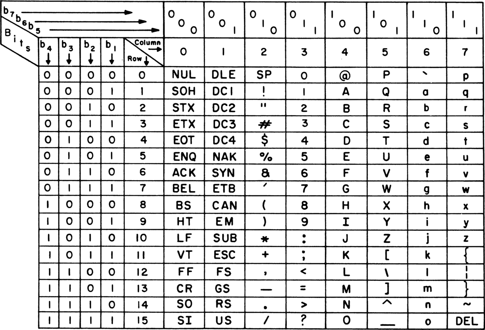
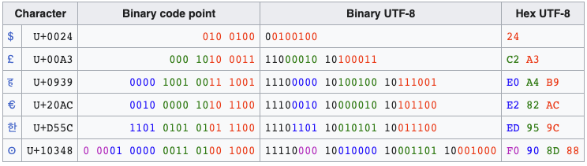
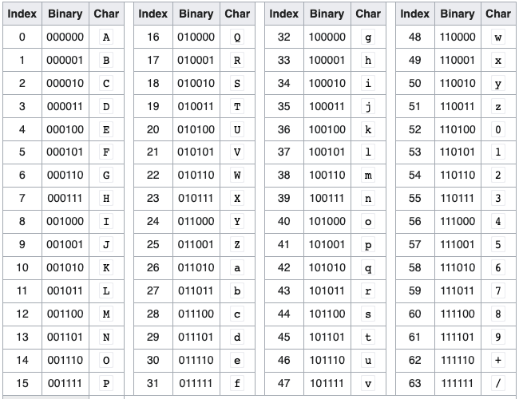

03-Encoding
Silvestro Di Pietro
Silvestro Di Pietro


Silvestro Di Pietro
20/03/2023
In computers, encoding is the process of putting a sequence of characters (letters, numbers, punctuation, and certain symbols) into a specialized format for efficient transmission or storage. Decoding is the opposite process – the conversion of an encoded format back into the original sequence of characters.

A code unit is the “word size” of the character encoding scheme, such as ‘7-bit’, ‘8-bit’, ‘16-bit’. In some schemes, some characters are encoded using multiple code units, resulting in a variable-length encoding. A code unit is referred to as a code value in some documents
US-ASCII consists of *7
bits;UTF-8, EBCDIC and GB 18030 consists of
8 bits;UTF-16 consists of 16
bits;UTF-32 consists of 32
bits.abbreviated from
American Standard Code for Information Interchange, is a
character encoding standard for electronic communication. ASCII codes
represent text in computers, telecommunications equipment, and other
devices. Because of technical limitations of computer systems at the
time it was invented, ASCII has just 128 code points, of
which only 95 are printable characters.

UTF-8 is a variable-length character encoding standard used for electronic communication. Defined by the Unicode Standard, the name is derived from Unicode (or Universal Coded Character Set) Transformation Format – 8-bit.
UTF-8 is capable of encoding all 1,112,064 valid
character code points in Unicode using one to
four one-byte (8-bit) code units. Code points with lower
numerical values, which tend to occur more frequently, are encoded using
fewer bytes. It was designed for backward compatibility with
ASCII: the first 128 characters of Unicode, which
correspond one-to-one with ASCII, are encoded using a single byte with
the same binary value as ASCII, so that valid ASCII text is valid
UTF-8-encoded Unicode as well.
The iconv program converts text from one encoding to another encoding. More precisely, it converts from the encoding given for the -f option to the encoding given for the -t option. Either of these encodings defaults to the encoding of the current locale. All the inputfiles are read and converted in turn; if no inputfile is given, the standard input is used. The converted text is printed to standard output.
man iconv

In computer programming, Base64 is a group of binary-to-text encoding
schemes that represent binary data (more specifically,
a sequence of 8-bit bytes) in sequences of
24 bits that can be represented by four 6-bit
Base64 digits.
Binary files cannot be transmitted or stored easily because in a binary file there are bytes, or better, sequence of bits that will interfere within the transmit protocol o the data storage format (eg a binary file sent by email.) or database storage
| File name | Size | Base64 size | Base64 gzip size |
|---|---|---|---|
| ifomLogo.png | 5754 | 10233 | 5533 |

RFC rfc3986
URL is a subset of th URI and is for Uniform Resource Identifier. in
URL there are some reserved characters as forward slash
! # $ & ’ ( ) * + , / : ; = ? @ [ ]
You can represent binary chars escaping (prefixing) them using a %
A (see ASCII table) can be represented by
%41